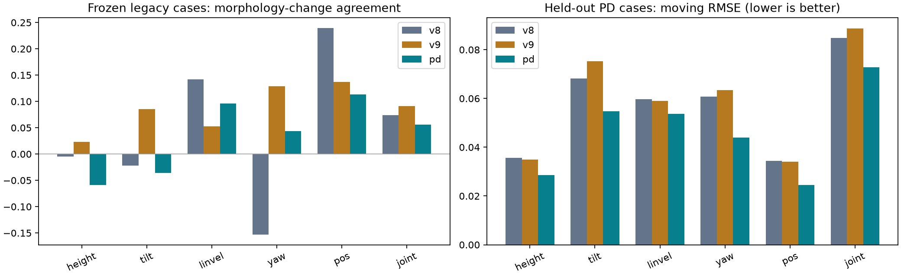
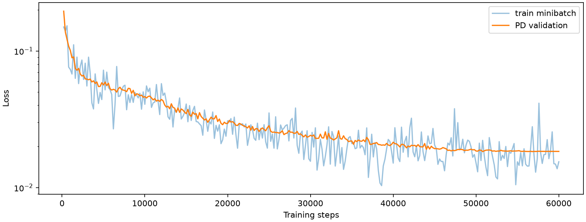

2026년 11월 1일 · 기존 v8/v9와 같은 학습·평가 조건
기존 동일 평가에서 PD 데이터 모델은 형상 효과 개선 기준을 통과하지 못했다. PD 미학습 시작점에서 v8보다 움직임 오차가 낮은 핵심 항목: 몸통 높이, 몸통 기울기, 이동 속도.
PD 수집은 16형상, 2,432에피소드, 유효 제어 238,226스텝이며 139에피소드에서 낙상이 있었다. 실제 MJX의 관절·몸통 상태와 PD 목표를 저장했고, 낙상 뒤 구간은 학습에서 제외했다. PPO rollout도 실제 물리 데이터다. 이번에 바뀐 것은 목표 관절각을 만드는 방식과 데이터 분포다.
주 기준 v8은 같은 16형상이고, v9는 48학습 형상이므로 보조 기준이다. PD 모델도 FiLM, 길이 32, 60,000스텝, 배치 32, 학습률 0.0002, Mode 2·4, diffusion 5단계, minmax, DDIM, seed 0을 그대로 사용했다. PD 학습에는 PPO나 E-swap 데이터를 넣지 않았다. 데이터 양은 v8의 13,056에피소드와 달라 수집 제어기만의 인과 효과로 단정할 수 없다.
PD train/validation은 모션 이름·로컬 시작 프레임 그룹으로 형상 전체를 함께 분할했다. 검증 15그룹·240에피소드이며, 같은 시작점의 형상 복제본이 학습·검증에 나뉘지 않았다. 같은 모션의 다른 시작점은 학습에 있으므로 미학습 모션 평가로 해석하지 않는다. 형상 파라미터의 독립 방향 수는 7로 기존 16형상과 같다. 모든 설정과 데이터 해시는 conditions.json, 수집 점검은 data_audit.json에 있다.
세 모델 모두 동일한 기존 시험 형상 8개, 516쌍, 8개 seed, v8 오차 단위, 시작 프레임 30을 사용했다. 형상쌍의 행동이 같다는 검사를 통과했다. 핵심 통과 기준은 높이·기울기·속도의 형상 변화 일치도가 각각 v8보다 0.1 이상 개선되는 것이다. 같은 원본 행동에서 반복 뽑은 형상쌍이므로 516개가 독립 표본은 아니다. 학습 형상 평가는 별도 원자료로 제공한다.
| 항목 | 모델 | 일치도 | 움직임 RMSE | 틀린 E 추가 오차 | 틀린 A 추가 오차 |
|---|---|---|---|---|---|
| 몸통 높이 | v8 | -0.005 | 0.060 | 0.000 | 0.011 |
| 몸통 높이 | v9 | 0.023 | 0.064 | 0.001 | 0.010 |
| 몸통 높이 | pd | -0.059 | 0.065 | 0.001 | 0.008 |
| 몸통 기울기 | v8 | -0.022 | 0.097 | 0.001 | 0.018 |
| 몸통 기울기 | v9 | 0.085 | 0.099 | 0.002 | 0.017 |
| 몸통 기울기 | pd | -0.036 | 0.099 | -0.001 | 0.017 |
| 이동 속도 | v8 | 0.142 | 0.068 | 0.001 | 0.004 |
| 이동 속도 | v9 | 0.053 | 0.071 | 0.000 | 0.003 |
| 이동 속도 | pd | 0.096 | 0.074 | 0.002 | 0.001 |
| 방향 | v8 | -0.153 | 0.050 | -0.002 | 0.001 |
| 방향 | v9 | 0.129 | 0.047 | 0.001 | 0.001 |
| 방향 | pd | 0.043 | 0.048 | 0.001 | 0.001 |
| 위치 | v8 | 0.240 | 0.040 | 0.003 | 0.002 |
| 위치 | v9 | 0.137 | 0.044 | 0.001 | 0.001 |
| 위치 | pd | 0.114 | 0.056 | 0.002 | 0.000 |
| 관절각 | v8 | 0.074 | 0.089 | 0.001 | 0.057 |
| 관절각 | v9 | 0.091 | 0.096 | 0.001 | 0.053 |
| 관절각 | pd | 0.056 | 0.106 | 0.000 | 0.046 |

동일한 PD 검증 에피소드를 세 모델에 넣고, 올바른 E·A, 틀린 E, 다른 모션의 A를 비교했다. 주 평가인 시작 프레임 30에서 길이가 충분한 140개 사례를 사용했다. 일치도는 시간에 따른 움직임 상관이다. 추가 오차는 양수일수록 올바른 조건을 쓴 예측이 더 정확했다는 뜻이다. 형상마다 리타겟팅 행동이 다르고 S0에도 형상 정보가 들어 있어 이 표는 순수한 동일-A 형상 인과 실험으로 해석하지 않는다.
| 항목 | 모델 | 일치도 | 움직임 RMSE | 틀린 E 추가 오차 | 틀린 A 추가 오차 |
|---|---|---|---|---|---|
| 몸통 높이 | v8 | 0.123 | 0.036 | 0.006 | 0.001 |
| 몸통 높이 | v9 | 0.060 | 0.035 | 0.004 | 0.001 |
| 몸통 높이 | pd | 0.339 | 0.029 | 0.011 | 0.002 |
| 몸통 기울기 | v8 | 0.635 | 0.068 | 0.004 | 0.024 |
| 몸통 기울기 | v9 | 0.526 | 0.075 | 0.000 | 0.020 |
| 몸통 기울기 | pd | 0.784 | 0.055 | 0.013 | 0.031 |
| 이동 속도 | v8 | 0.182 | 0.060 | 0.001 | 0.001 |
| 이동 속도 | v9 | 0.144 | 0.059 | 0.001 | 0.000 |
| 이동 속도 | pd | 0.369 | 0.054 | 0.005 | 0.003 |
| 방향 | v8 | 0.255 | 0.061 | -0.001 | 0.000 |
| 방향 | v9 | 0.175 | 0.063 | -0.001 | -0.002 |
| 방향 | pd | 0.616 | 0.044 | 0.008 | 0.005 |
| 위치 | v8 | 0.755 | 0.034 | 0.002 | 0.000 |
| 위치 | v9 | 0.757 | 0.034 | 0.001 | -0.000 |
| 위치 | pd | 0.891 | 0.024 | 0.008 | 0.003 |
| 관절각 | v8 | 0.762 | 0.085 | 0.001 | 0.043 |
| 관절각 | v9 | 0.741 | 0.089 | 0.000 | 0.040 |
| 관절각 | pd | 0.834 | 0.073 | 0.008 | 0.052 |
두 평가 모두 기존 Mode-2 샘플링 중 A를 고정하는 진단을 유지했다. Mode 1을 학습한 조건부 dynamics 모델의 평가로 바꿔 해석하지 않는다. PD 자체 검증이 개선돼도 기존 PPO 행동·미학습 형상 분포로의 일반화가 개선됐다는 뜻은 아니다.
고정 16형상 × 후보 4개와 공동 생성 후보 16개, zigzag·circle 4초, scale 10을 유지했다. 추가로 scale 0·2초·16후보 경로 검사를 했다. Gate는 기존과 같이 예측 보상의 형상 효과 p<0.05, 실제 형상 평균 보상과 순위 상관>0.6, 2초 경로 차 중앙값<15cm다. 생존 수를 함께 표시하며 최종 10초 성공 판정은 하지 않았다. v8/v9 물리 결과는 코드·체크포인트 해시가 같은 기존 결과를 보존해 비교했다.
| 모델·Task | 형상 효과 p | 보상 순위 상관 | 2초 경로 차 cm | 2초 생존 | 4초 생존 | 4초 진행 중앙값 | Gate |
|---|---|---|---|---|---|---|---|
| v8 · zigzag | 0.1433 | 0.491 | 12.2 | 13/16 | 9/16 | -0.268 m | 미달 |
| v8 · circle | 0.9640 | -0.394 | 12.2 | 13/16 | 12/16 | -0.008 바퀴 | 미달 |
| v9 · zigzag | 0.9564 | -0.176 | 18.2 | 14/16 | 8/16 | 0.278 m | 미달 |
| v9 · circle | 0.9099 | -0.597 | 18.2 | 14/16 | 4/16 | 0.048 바퀴 | 미달 |
| pd · zigzag | 0.0835 | 0.159 | 9.6 | 16/16 | 16/16 | -0.361 m | 미달 |
| pd · circle | <0.0001 | 0.053 | 9.6 | 16/16 | 15/16 | -0.072 바퀴 | 미달 |
60,000스텝 완료, 최종 PD 검증 loss 0.01840, 학습 9.0분. 정규화와 데이터가 달라 loss 숫자만으로 기존 모델과 성능 우열을 판정하지 않는다. 작업은 CPU 2코어, PyTorch GPU 할당 상한 60%(평가 25%), JAX 풀 40%로 순차 실행했다. RAM 여유 최소 13.4GiB, 전체 GPU 사용 최대 2.1GiB였다. 임시파일·캐시는 여유 공간이 큰 /home 아래에 둔다.
